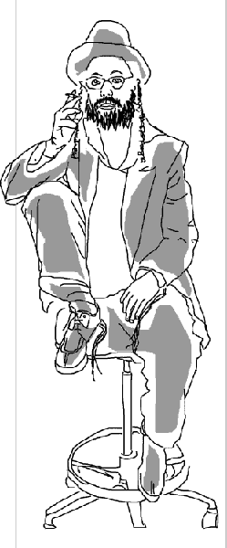
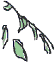

7 acts of love
Say Cheese is artist Oreet Ashery's series of experimental, process based interactions with her alter-ego Marcus Fisher that took place in 7 bedrooms across the world. There is extensive documentation of Say Cheese in the Archive section. Ashery has also created a new piece especially for the web, a permanent interactive sound work that can be found in the ‘god-therapist session’ section.
archive
Background material about the artist and the project.
god-therapist session
Requires JavaScript to be enabled. Please ensure that your speakers are turned ON.
Live residency
A live residency took place in April 2004 where participants talked live to Marcus Fisher about love and loss.